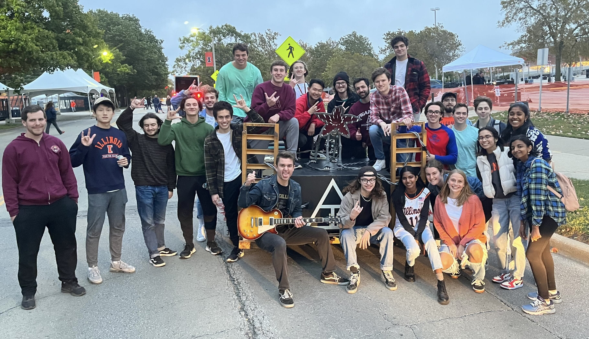
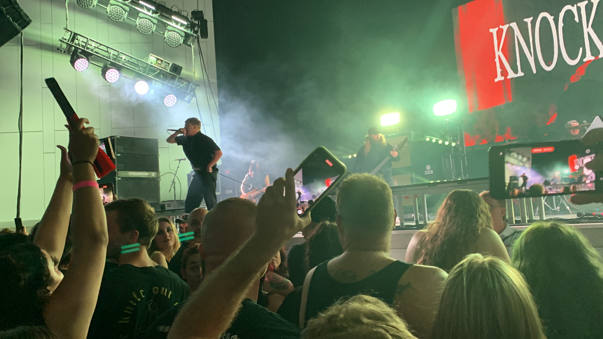

Education
I am a current Senior at the University of Illinois Urbana-Champaign pursuing a degree in Geographic Information Science with a minor in Computer Science.
Relevant Coursework
- CS374 - Intro to Algorithms and Models of Computation *in progress
- GGIS479 - Enterprise GIS *in progress
- CS225 - Data Structures and Algorithms (C++)
- CS415 - Game Development (Unreal Engine)
- GGIS224 - Environmental Data Science (R)
- GGIS379 - Intro to Geographic Information Systems

Extracurricular
Triangle Fraternity
I actively participate in the Illinois chapter of Triangle Fraternity, a unique organization that brings together STEM majors. I have held numerous positions in the Chapter, but most notably I am in my second term as Social Director, an elected executive board position responsible for planning social events for the chapter.
Serving as Social Director is fun, but I take pride in ensuring the chapter's success as an executive board member, leading 7 social chairs, and creating new funs events for our chapter.
Project Code
I am a software development team member of a project I found through Project Code, an organization that helps bring together students for various coding projects. I previously worked on a team to develop a mobile application that showcases events around the UIUC campus. More detailed project info can be found here.
Currently, I am on a team developing an E-Commerce website for students to sell academic materials.
Personal
I am a lover of live music, and I frequently attend local shows both in my hometown of Peoria and in the Champaign-Urbana area. I especially enjoy it when there is a mosh pit! In general, I enjoy most music, but my favorite is metal and hardcore. Currently, I love listening to Slipknot, Deftones, Knocked Loose, and Lorna Shore.
In addition to my love for music, I also find joy in longboarding, especially around campus, exploring fashion through thrifting, spending time outdoors, and playing pool — even though I am not very good.